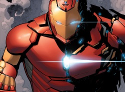

The main purpose of this suit is to serve as an all-in-one tool set. The mostly hexagonal scales that comprise the surface of the armor can be commanded to separate and reconfigure themselves into any form and color using nanotech principles of molecular recognition. This ability allows the limbs of the suit to take the form of different tools, and even allow the entire appearance of the armor to be modified, by changing the color and mass of the suit, in order to adapt to the task at hand, including stealth operations, heavy lifting, and orbital flight. After taking shape, the scales smooth themselves out along the body's contours to give a leaner feel to the armor. Some of the forms the Model-Prime Armor has taken are: a Hulkbuster-like physique, stealth armor, a reinforced appearance inspired by samurai, and a kid-sized mode.
Unlike other armors that were connected to the wielder's biology, this one is simply directly linked to the user's brain synapses. When not in use, the Model-Prime Armor can be collapsed into a bracelet on the wrist of the user, which can be activated and form around the user's entire body when called upon. When the user wants to show their face, the faceplate can split apart and retract inside of the helmet entirely. Recharging the armor from scratch takes at least three hours.
The Model-Prime Armor can reach the speed of sound right from lift-off, and additional thrusters can be formed from the suit's scales to reach higher speeds. Flight while in stealth mode appears to leave no repulsor energy trail, so it could be powered by other means.